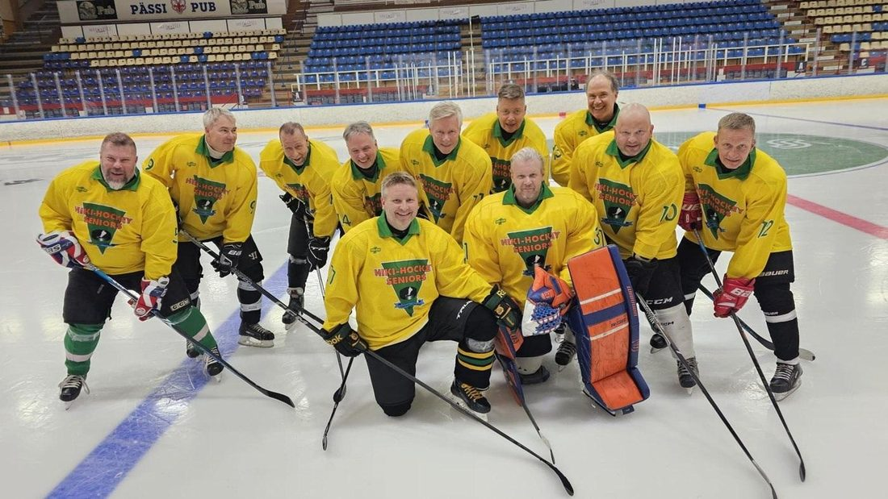
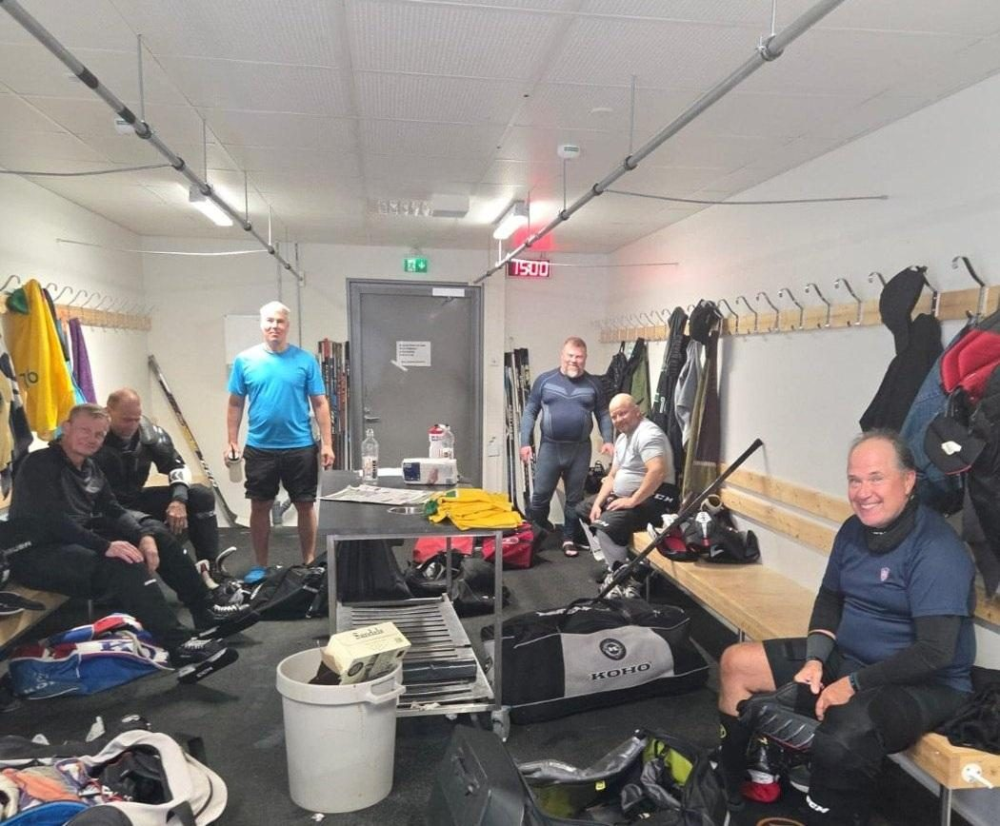
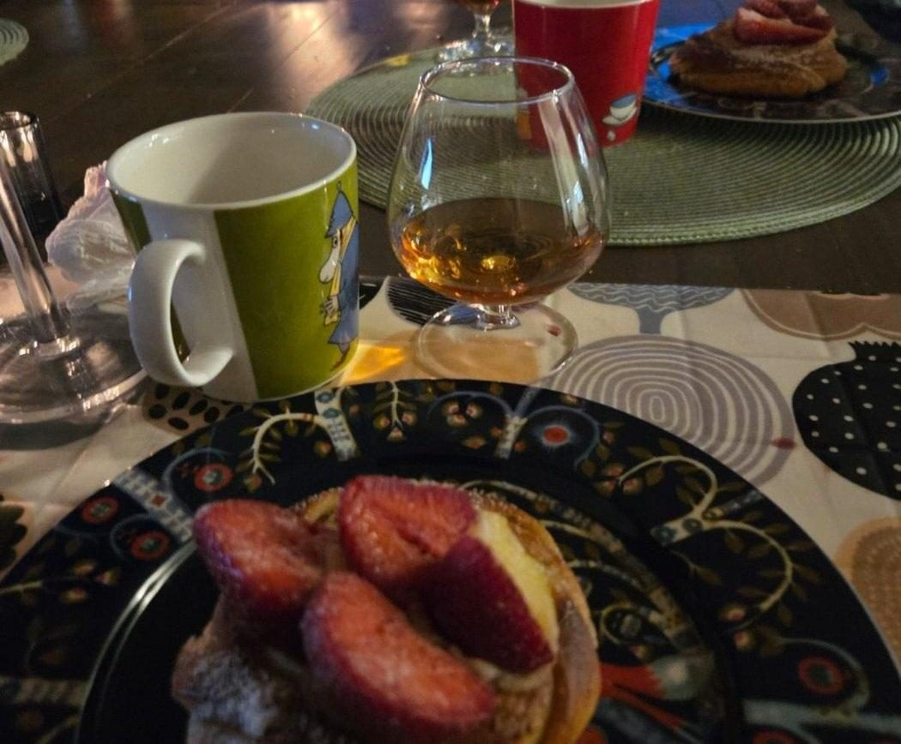
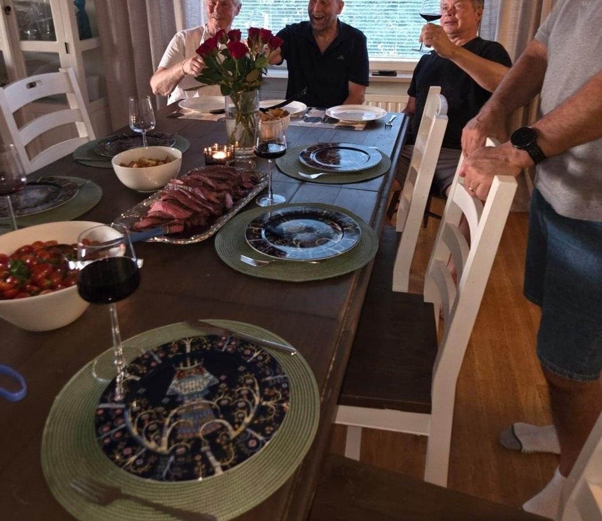
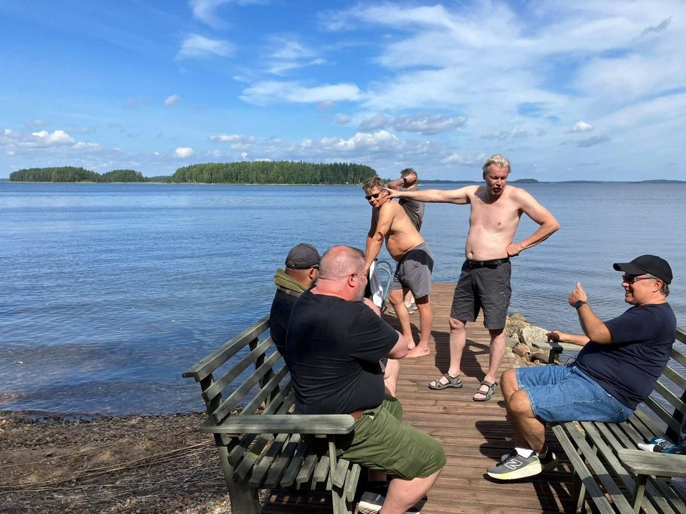
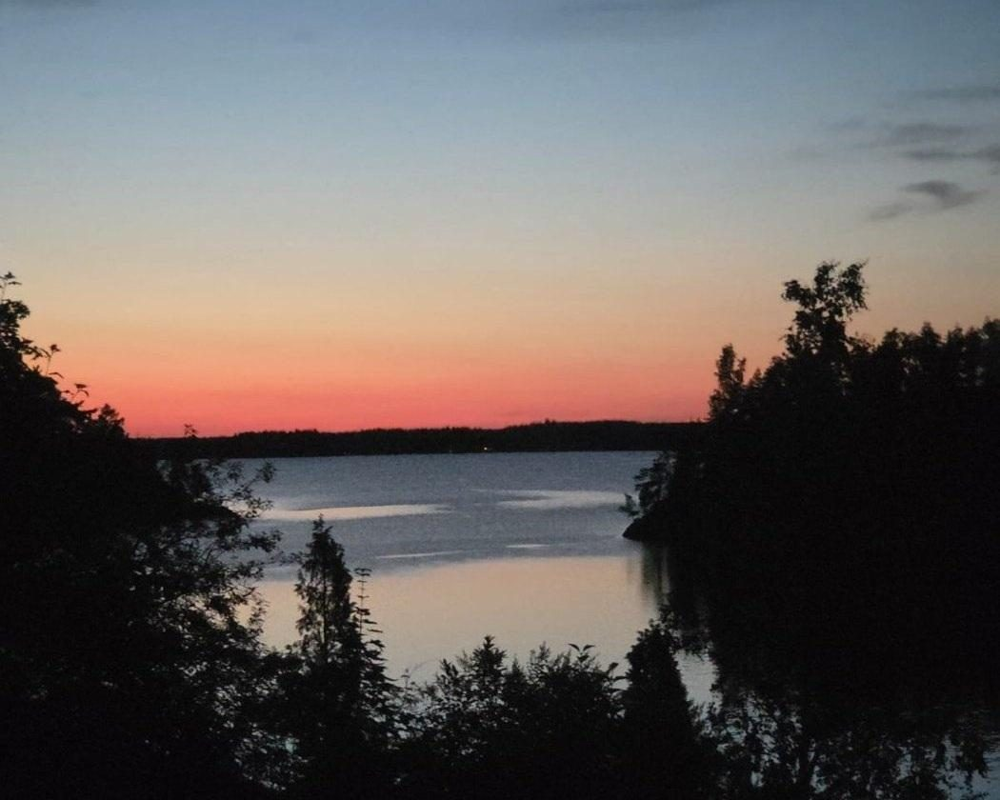
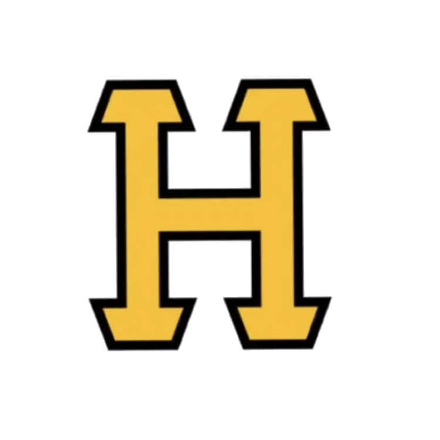

Hiki-Hockey Seniors · Miehet 60+ · 30.7.–2.8.2026
Kirja on periaatteessa jo loppu, mutta putkessa näkyy vielä yksi asia – ja se sattuu olemaan tuorein kaikista. Kun tätä historiikkia viimeisteltiin, HHS oli juuri palannut Savonlinnasta. Tässä on se reissu kokonaisuudessaan, esimerkkinä siitä mitä Hihossa tapahtuu senkin jälkeen, kun opiskeluvuodet ovat takanapäin.

Neljä ottelua, yksi piste, sija kahdeksan.
Mutta tilastot eivät kerro tästä viikonlopusta olennaisinta: kolmessa ottelussa neljästä HHS oli johdossa, kaikki tappiot tulivat yhdellä maalilla tai lyhyestä huonosta hetkestä, ja peli parani jokaisen ottelun myötä.

| Porin Pappasalamat 60 | 2–3 |
|---|---|
| Mansen Ketut 60 | 2–3 |
| Pelivaarit | 1–1 |
| Reds (sijat 7–8) | 2–6 |
Maalit: Yrjölä, Tiittanen, Pudas 2, Hirvonen 2, Koivula
Syötöt: Kepponen 2, Lehtonen 2, Tiittanen, Pudas
Maalilla: Jortikka — 12 ja 19 torjuntaa kahdessa tilastoidussa ottelussa
Mikkelin ABC:llä hiottiin sisääntulo vasemman laidan kautta: manageri ensin siniviivan yli kiekon kanssa, Antti täydellä vauhdilla maalille, Vesa vapaana laitaan. Kolme kosketusta, ei ylimääräistä luistelua.
Ja se toimi. Neljässä ottelussa oltiin kolmesti johdossa, kerran 24 sekunnin jälkeen. Kiekko kulki, paikat syntyivät.
Mitä ei hiottu? Sitä viimeistä. Turnauksen aikana kiekko kävi plekseissä, rimassa ja räpylässä. Se kävi tolpassa niin että Harjoitushallin katto tärisi. Se kävi kaikkialla muualla paitsi siellä minne se oli tarkoitettu.
Tässä on ensi vuoden valmistautumispalaveriin yksi kohta lisää: jääkiekko on maalintekopeli. Sisääntuloa, puolustusta ja syöttöpeliä voi hioa loputtomiin, mutta jossain vaiheessa joku tekee myös maalin. Sekin on treenattavissa – ja se on ainoa osa-alue, jota ABC:n pöydässä ei tullut käsiteltyä.
Hyvä uutinen: seitsemän maalia neljässä pelissä ei ole huono saldo. Parempi uutinen: paikkoja oli kaksinkertaisesti.
Pappasalamat 2–3 · la 1.8. klo 15:00, Kilpahalli
Vastustaja iski pari säkämaalia alkuun, mutta siitä HHS vain kiihtyi. Esa Yrjölä kavensi Timo Lehtosen upeasta syötöstä, ja yhdeksän sekuntia myöhemmin Jouko Tiittanen iski toisen. Kaksi maalia yhdeksässä sekunnissa – siihen pystyy harva joukkue missään sarjassa. Maalilla Jore Jortikka oli muuri: 12 torjuntaa ja nolla päästettyä avausvartin jälkeen. Huoltaja Sasu saapui paikalle – ja heti sen jälkeen peli kääntyi. Sattumaa? Tuskin.
Mansen Ketut 2–3 · la 1.8. klo 17:30, Harjoitushalli
24 sekuntia. Sen verran kesti, ennen kuin Antti Pudas näytti miten tämä laji pelataan – Jouko Tiittasen syöttö, kiekko sisään, 1–0. Sitten tuli minuutti 14. Ajassa 14:41 Ketut tasoitti, ja 14:53 he johtivat. Kaksitoista sekuntia. Tässä on ottelun koko matematiikka: jos minuutti 14 olisi jätetty pelaamatta, HHS olisi voittanut 2–1. Ehdotamme sääntömuutosta ensi vuodelle – peliaika 59 minuuttia, minuutti 14 pois.
Pelivaarit 1–1 · su 2.8. klo 11:00, Kilpahalli
Lohkon vahvin joukkue vastaan, aamupeli kahden eilisen ottelun jälkeen – ja HHS otti pisteen. Ajassa 08:34 Vesa Koivula vei HHS:n johtoon, syötöt Antti Pudas ja Timo Lehtonen. Kaunis kuvio, juuri sellainen jota Mikkelissä hiottiin. Turnauksen paras suoritus – ja ainoa piste.
Reds 2–6 · su 2.8. klo 14:30, Harjoitushalli · sijat 7–8
Neljäs peli kahdessa päivässä, ja silti HHS avasi turnauksen parhaan alun. Jari Hirvonen iski jo ajassa 02:32, syöttäjänä Janne Kepponen. Kaksi minuuttia myöhemmin Antti Pudas vei johtoon 2–1, jälleen Kepposen syötöstä. Kepponen keräsi kaksi syöttöpistettä alle viidessä minuutissa. Pakilta. Sellaista näkee harvoin.

Menu toteutui täsmälleen niin kuin suunniteltiin. Liha marinoitiin, grillattiin nopeasti ja viipaloitiin poikkisyin. Tomaatit halkaistiin, basilika revittiin käsin. Ruusut pöydässä, punaviinit kaadettuina.
Tämä on se laji, jossa HHS on oikeasti omaa luokkaansa.


Ei lampaita tänä vuonna. Neljä peliä kahdessa päivässä, ei yhtään valitusta.
Ei lampaita! Lukekaa se vielä kerran. Neljä ottelua kahdessa päivässä, kuudenkympin ikäisillä miehillä, ja jokainen jaksoi loppuun asti hymyssä suin. Valittaminen on Hihossa muuten virallisesti kielletty – ja tämä porukka noudatti sääntöä täydellisesti koko viikonlopun. Ihanaa! Kun porukka on tällainen, tulostaulu saa näyttää ihan mitä huvittaa.

Ilmoittautuminen 47. Saimaa-turnaukseen on jo tehty. Ja koska HHS ei ole koskaan osannut valita, se tehtiin kolmeen sarjaan: 60+ A, 60+ B ja 65+. Järjestäjä päättää lopulta mikä niistä toteutuu.
Mutta jos sattuisi käymään niin, että kaikki kolme toteutuvat, pelejä kertyisi yli kymmenen yhden viikonlopun aikana. Kunto kyllä kestää. Palautumisstrategia on jo hiottu: torstaina harkkapeli, perjantaina voimien keräily ja viikonloppuna räjäytetään pankki. Kolmella sarjalla vain kolme kertaa.
Tässä on koko tämä kirja tiivistettynä yhteen liitteeseen. Ilmoittaudutaan kolmeen sarjaan, koska valitseminen olisi liikaa vaivaa. Hävitään neljä peliä yhden maalin erolla eikä valiteta kertaakaan. Ja ruoka on parempaa kuin pelillä ansaittu sijoitus.
Nähdään Savonlinnassa 2027.

Katso videolta HIHO:n saunailta ylioppilaiden terveydenhuoltosäätiön (YTHS) tiloissa vuonna 1999. Vanhimpia säilyneitä tallenteita. Korkeakoululta lainaan saatu digikamera tallensi tuohon aikaan vain muutamien sekuntien pituisia klippejä.
youtu.be/zlfQrABxRF0